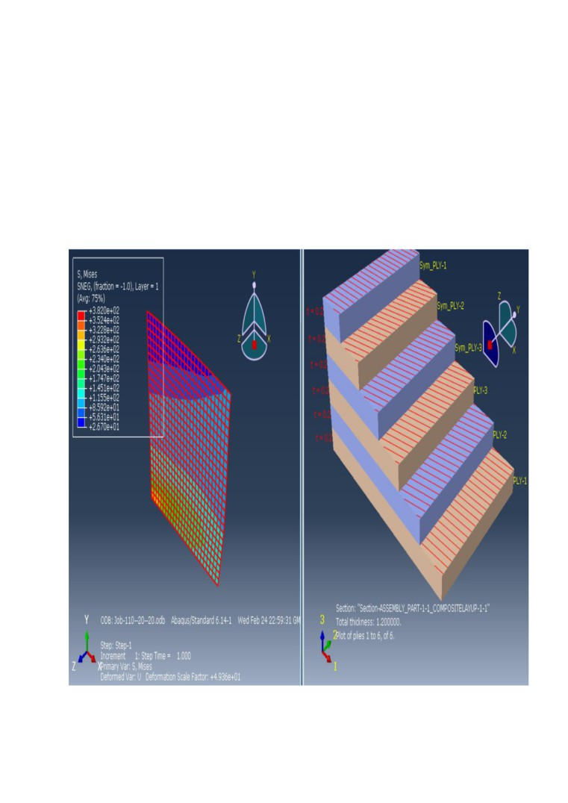

Parametrik Çalışma Nedir?
Belirli Parametreler tarafından yönlendirilebilen çalışmaların tamamına parametrik
çalışma diyebiliriz. Bu parametreler sayılar ve algoritmalardan oluşabilir ve değişkendirler.
Örneğin belirli bir tasarımda ölçülere değişken atayarak sonsuz varyasyon elde edebiliriz.
Amaç
Makine Mühendisliğinde en önemli konulardan biri malzemelerin üretim aşamasına
geçirilmeden önce analiz edilip optimum sonuçlarla belirli faktörlere bağlı olarak üretimi
sağlamaktır. Mühendislikte günümüz koşullarında hiçbir analiz tam doğru sonucu
vermemekte, bir diğer deyişle küçük de olsa her zaman bir hata payı beklenmektedir. Bunun
yanında doğru sonuca en yakın değerler sonlu elemanlar yöntemiyle bulunabilmektedir.
Amacımız sonlu elemanlar yöntemine ek olarak Python programlama diliyle ek algoritmalar
kullanarak hata payını azaltıp optimum sonuçlar elde etmektir.
Proje 1
Uçak Pervanesi Basınç Analizi ve
Malzeme Mekanik Davranışı
-Proje analizi için kullanılan ana program Abaqus CAE yazılımıdır. Program üzerine
Python programlama diliyle yama yazılım üretilerek istenilen değişkenler parametrik olarak
çalıştırılıp varyasyonlar oluşturulmuştur. Yama yazılım içindeki algoritmalar ve arayüz
tasarımları özgün olarak tarafımca yazılmıştır.
-Uçak pervanesi üzerine belirli bir aralık kuvvet ve adım büyüklüğü belirlenerek tüm
kuvvetlere karşı nasıl bir tepki verdiği ele alınmıştır.
ŞEKİL 1 - Pervane Solidworks Görüntüsü
Yama Yazılım Görüntüleri
ve
Kullanım
-Burada amaçlanan çelikten yapılmış bir uçak pervanesinin 100 P ile 200 P aralığında 10‘ar birim
ilerleyerek tüm varyasyonlarının kaynak kodunu oluşturarak Abaqus CAE yazılımında otomatik
analizinin sağlanmasıdır.
-Kodlar oluşturulduktan sonra kopyalayıp ABAQUS CAE yazılımında çalıştıracağız.
-Yukarıdaki şekilde görüldüğü gibi, kodlar ABAQUS CAE yazılımında çalıştırıldığında çoklu olarak
otomatik analiz edildi.
-Bu aşamadan sonra tüm sonuçların karşılaştırılması gerekiyor. Parçanın hangi kuvvetler karşısında
nasıl tepkiler verdiğini inceleyeceğiz.
-Yukarıda 100 , 120 , 170 , 200 P altındaki parçanın mekanik davranışlarının sonuç görüntüleri
bulunmaktadır.
Kullanılan Algoritma Kod Parçası Örneği
Proje 2
Kompozit Levha Analizi
-Kompozitten yapılmış bir levhanın farklı elyaf açı kombinasyonlarında, kabuk kenar yüküne
nasıl tepkiler verdiği ele alınmıştır. Proje analizi için kullanılan ana program Abaqus CAE
yazılımıdır. Program üzerine Python programlama diliyle yama yazılım üretilerek istenilen
değişkenler parametrik olarak varyasyonlar oluşturmuştur. Yama yazılım içindeki
algoritmalar ve arayüz tasarımları özgün olarak tarafımca yazılmıştır.
Yama Yazılım Görüntüleri
ve
Kullanım
-Yukarıdaki resimde programın içeriği anlatılmıştır. Burada amaçlanan Fiber bir levhanın belli bir
kabuk yükü altında, belirli açı aralığında verdiği tepkileri tüm olasılıkların varyasyonları oluşturularak
analiz edilmesidir.
-Kodlar oluşturulduktan sonra kopyalayıp ABAQUS CAE yazılımında çalıştıracağız.
-Yukarıdaki şekilde görüldüğü gibi, kodlar ABAQUS CAE yazılımında çalıştırıldığında çoklu olarak
otomatik olarak analiz edildi.
-Bu aşamadan sonra tüm sonuçların karşılaştırılması gerekiyor. Parçanın hangi kuvvetler karşısında
nasıl tepkiler verdiğini inceleyeceğiz.
Sonuç Örnekleri
0-0-0-0-0-0 açı kombinasyonu
0-20-20-20-20-0 Açı Kombinasyonu

10-20-20-20-20-10 Açı Kombinasyonu
Yukarıda belli açı kombinasyonları altındaki parçanın mekanik davranışlarının sonuç görüntüleri
bulunmaktadır.
Kullanılan Algoritma Kod Parçası Örneği